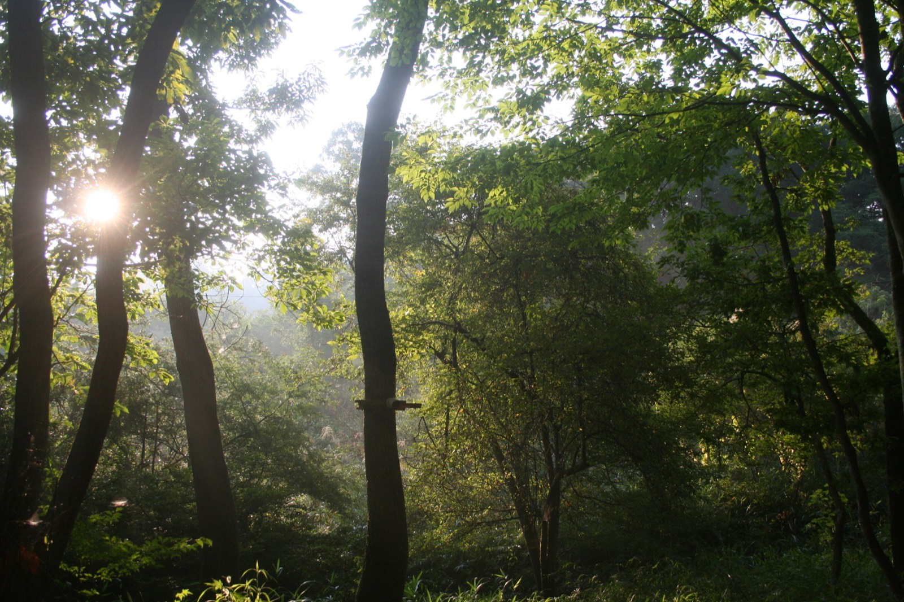
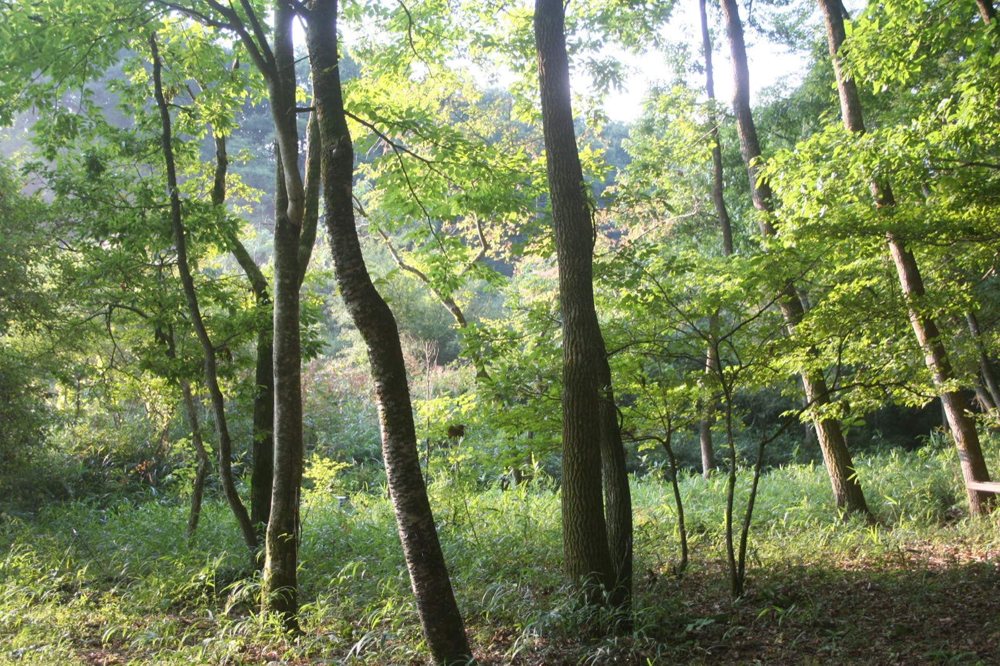
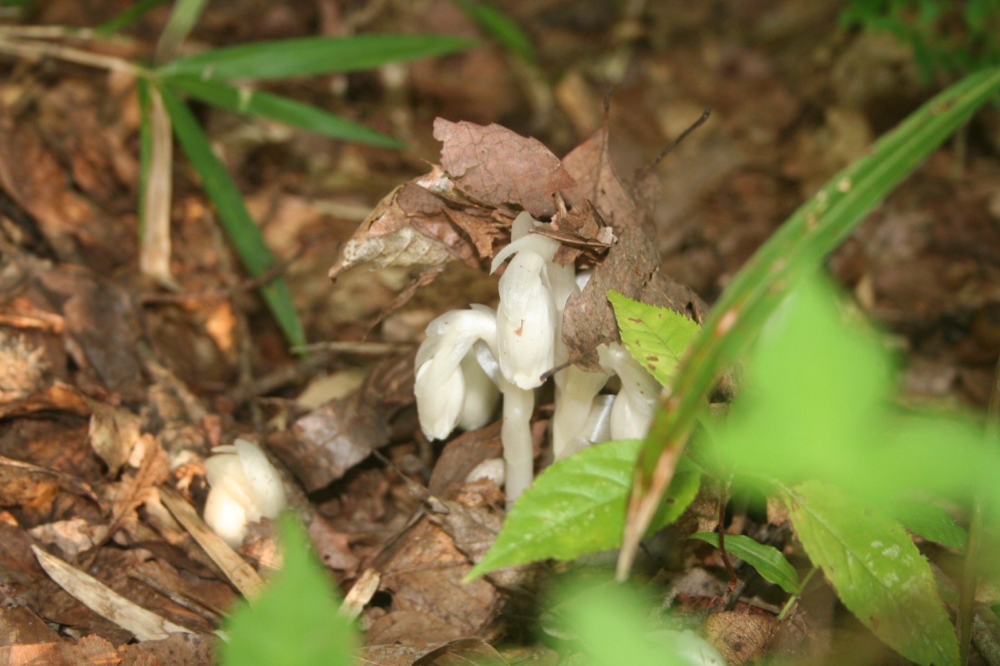

The greatest mystery
is not at the edge
of the universe.
It is right here.
Consciousness — why does the brain give rise to subjective experience?
Now is the time to ask the ultimate question that AI cannot answer.
謎は、宇宙の果てではなく、ここにある。
ConceptOur Philosophy
What is consciousness?
The moment we ask this question, our consciousness begins to move.
Even in an age when science has advanced so far,
consciousness remains at once the most intimate thing in the universe
and one of its greatest mysteries.
When, and how, did the very concept of “consciousness” come into being?
Does consciousness exist only in human beings?
Might it dwell, in some form, in animals and plants — or even in machines?
Or perhaps all we can say with certainty
is that each of us has a subjective experience of being conscious.
Consciousness does not merely mirror the world;
it is also what finds value in the world.
It feels joy and suffering, holds things dear,
and longs to live well.
And this longing to live well reaches out to others, too.
Is it not this aspiration — this consciousness of compassion — that sustains our societies?
From the hard problem of consciousness to the discovery of first-person consciousness,
and on to the question of the value of consciousness —
by questioning consciousness anew from every direction and bringing it into everyday practice,
we pursue and support research that contributes to better lives and a better society.
Two AxesDomains of Inquiry
Philosophical and Scientific Inquiry into Consciousness
Why can subjective experience (qualia) arise in a physical brain — and perhaps in a machine? With the hard problem of consciousness at its center, this axis takes up the ultimate question of consciousness from both philosophy and science. From there, we trace the concept of consciousness back to its birth and transformations, and engage with debates on consciousness that embrace all living beings and machines as well.
Discovering Consciousness in the First Person
The forest, meditation, Buddhism, satoyama (the traditional Japanese landscape of villages, fields, and tended woodland), the Jōmon (Japan’s prehistoric culture) — not as concepts but as first-person experience, we discover the many forms that consciousness can take. With the forest as our field of practice, we reflect on what emerges as we move back and forth between non-ordinary and everyday consciousness. And we respond to the question of value: what kind of consciousness, and what way of living, is good?
Research ProjectsCurrent & Planned
Our research projects are organized around the ultimate questions of consciousness.
Three projects are currently under way, and four more are in planning.
Consciousness and Technology Project
Supports research and development on altered states of consciousness and technology, beginning with the Hallucination Machine — engaging, through implementation, with debates on consciousness that include machines.
Buddhism and Consciousness Project
Approaches the problem of consciousness through Buddhism’s 2,500-year tradition of systematic inquiry into the mind — above all, from the perspective of meditative practice.
Consciousness and Satoyama Project
Explores how consciousness and time were lived in ways of life before the Industrial Revolution, questioning them anew in practice with reference to Kenji Miyazawa and Henri Bergson.
Origins of Consciousness ProjectIn planning
How did the concept of consciousness — and the mind itself — come into being? Drawing on evolutionary origins and the genealogy of the concept, we inquire into consciousness before the concept.
The Hard Problem of Consciousness ProjectIn planning
Why does subjective experience (qualia) arise in a physical brain? We take on the ultimate question of consciousness directly, from both philosophy and neuroscience.
Experimental Archaeology of Consciousness ProjectIn planning
Through archaeological inquiry and the practice of experimental archaeology, we explore the minds of ancient peoples, beginning with the Jōmon. The forest, dotted with Jōmon sites, serves as our field of practice.
Natural Computation AI ProjectIn planning
Learning from the computation that nature itself performs, we envision AI that takes into account all living beings — indeed all that exists — and their ways of being conscious.
Four ProgramsPrograms
Conference
Once a year, we open the questions of consciousness to the public. In 2026, the conference takes up the theme of “Machine Consciousness” on October 24 and 25.
Research Support
We are planning grant-based support for researchers who pursue the questions of consciousness.
Activities in the Forest
Debate at the desk alone cannot reach the “value” of consciousness. With a forest of our own as a field, we pursue practical inquiry through the body, everyday living, and hands-on skills.
Discord Community
We run a Discord server where members involved in the Foundation’s projects come together.
The ForestHokuto, Yamanashi
“Bringing the ultimate question
down to the land and the forest.”
At the foot of the Hōō Sanzan mountains, adjacent to a heartland of Middle Jōmon spiritual culture,
lies 18,000 tsubo (about 6 hectares) of mountain forest in Mukawa-chō, Hokuto City, Yamanashi Prefecture.
In July 2026, the Foundation signed an agreement to acquire this forest as its field of practice.
Here, over several years, we will build a hall for about 60 people through participatory, DIY construction.
Conferences on consciousness, meditation retreats, programs spent without clocks or smartphones —
we are creating a place of practice open not only to researchers but to everyone.
Moving back and forth between non-ordinary consciousness in the forest and everyday consciousness in the city,
we come to notice the question of the value of consciousness.
That is what this place aims for.



From our practice in the forest
Conference 2026Annual Conference
Machine
Consciousness
Machine Consciousness
and Human Consciousness
Keynote: Ryota Kanai
Speakers: Masataka Watanabe / Kenichiro Mogi / Yukihiro Nobuhara
How does machine consciousness relate to human consciousness? Setting out from the machine consciousness debate now unfolding in the Bay Area, this day connects the two head-on.
Machine Consciousness
and More-than-Human Consciousness
Keynote: Takashi Ikegami
Speakers: Daichi Suzuki / Masayoshi Someya / Keisuke Suzuki (online) / Fuzumi Shimonishi
How does machine consciousness relate to more-than-human consciousness? Plant consciousness, the genealogy of the concept of consciousness, its evolutionary origins — this day calls the very premises into question.
Keynotes consist of a 45-minute talk followed by 15 minutes of Q&A; each talk is 30 minutes followed by 30 minutes of discussion — a format built around dialogue.
A reception and poster session (flash talks and core time) are planned for the evening of Day 1, with another poster session after the talks on Day 2 (open call, selected by review).
Ahead of the conference, a team of early-career researchers will prepare a “State of Machine Consciousness” report to be distributed to participants.
Speakers and program are subject to change.
In-person attendance is by invitation. Online participation (Zoom livestream) is free with registration.
UpcomingSchedule
Conference 2026: “Machine Consciousness”Open to the public
Tokyo Midtown (Roppongi, Tokyo) | Free online livestream
Register to join online — Peatix, free (Japanese) ↗
Kenji Miyazawa Reading Group Retreat & Public Reading SessionOpen to the public on Nov 1
Ōtawara, Tochigi (Hanazono-sō)
Schedules are subject to change. Details and how to participate will be announced for each event in due course.
ActivitiesActivity Reports
Ishikiken, as the Foundation is known in Japan, began its activities in 2023 and became a general incorporated foundation in September 2024.
Through FY2025 (Apr 2025–Mar 2026), it built up study groups, retreats, reading groups, and research support
around three themes: Technology, Meditation, and Well-being.
While continuing its three projects, the Foundation launched in earnest its plan for the Forest as a permanent base.
Hallucination MachineTECHNOLOGY
Continued support for the development of a real-time hallucination machine led by Keisuke Suzuki (Hokkaido University). Demo exhibition at the International Conference on Artificial Life, ALIFE 2025 (Kyoto), and presentation at ASSC 2025 (Crete, Greece). The international conference “Models of Consciousness 6” was held at Hokkaido University — its first time in Asia, with approximately 90 participants. The Foundation also sponsored the “QUALIUS Retreat on Non-Ordinary States of Consciousness.”
Buddhism and ConsciousnessMEDITATION
Under the leadership of Masahiro Fujino (Ritsumeikan University), the “Meditation Retreat for Researchers 2025” was co-organized with Ritsumeikan University (Hitsuki Club, Shizuoka; 4 days and 3 nights; 23 researchers from many fields). An organized session on “Meditation and AI,” proposed by participating researchers, was accepted for the 2026 Annual Conference of the Japanese Society for Artificial Intelligence. Fujino’s TEDxKyotoUniversity talk surpassed 180,000 views within four months of its release. Field research on Vipassana meditation was also conducted at MCU in Thailand.
Report: Meditation Retreat for Researchers 2025 (Japanese) ↗Report: Vipassana Meditation Field Research in Thailand (2025) (Japanese) ↗
Consciousness and SatoyamaWELL-BEING
Centered on Yukihiro Nobuhara, the Kenji Miyazawa Reading Group and the Bergson Reading Group met monthly. Retreats were held in Hokuto (Yamanashi) and Takahata (Yamagata), along with fieldwork at Fundoan (Ibaraki) and the “Mu no Kai” (Fukushima).
Records of the Kenji Miyazawa Reading Group (Japanese) ↗Records of the Bergson Reading Group (Japanese) ↗
Planning the ForestFOREST
Plans to make a forest in Hokuto, Yamanashi, the site of the Foundation’s practical activities moved into full swing. An architectural plan was developed together with VUILD Inc.
Incorporated as The Consciousness Research Foundation, a general incorporated foundation, and expanded its activities under a three-team structure.
Hallucination MachineTECHNOLOGY
Featured the “Hallucination Machine” of Keisuke Suzuki (Hokkaido University), holding a discussion and hands-on session on altered states of consciousness, and funded development of an update to the first prototype.
Buddhism and ConsciousnessMEDITATION
Supported a meditation retreat for researchers. Held a series of dialogue-style study sessions, inviting Satoshi Nagasawa, Issho Fujita, and Vimala Inoue in conversation with Masahiro Niizuma, Fuzumi Shimonishi, and Chikahiro Hanamura.
Report: Meditation Retreat for Researchers 2024 (Japanese) ↗Buddhism and Consciousness #1 [Satoshi Nagasawa × Tetsunari Suda × Masahiro Niizuma] (Japanese) ↗Buddhism and Consciousness #2 [Issho Fujita × Fuzumi Shimonishi] (Japanese) ↗Buddhism and Consciousness #3 [Vimala Inoue × Chikahiro Hanamura] (Japanese) ↗
Consciousness and SatoyamaWELL-BEING
Launched the Consciousness and Satoyama Project, asking about the possibilities and significance of the self-sufficient, cyclical way of life found in satoyama. Visited Permaculture Center Japan and started the Kenji Miyazawa and Bergson reading groups.
(before incorporation)
Began activities as “Ishikiken.” With Yukihiro Nobuhara (Professor Emeritus, The University of Tokyo) as its representative, it held a series of study sessions on three themes.
Mind Uploading
Speaker: Masataka Watanabe (The University of Tokyo). The session asked what the mind is, examined the theoretical and technical possibilities of uploading, and considered the world that might follow. This dialogue was later published as Yukihiro Nobuhara and Masataka Watanabe, Where Does Consciousness Come From? (Hayakawa Shinsho, in Japanese).
Event report (Japanese) →Where Does Consciousness Come From? (Hayakawa Publishing) (Japanese) ↗
Well-being and Technology
Speaker: Junji Watanabe (NTT Communication Science Laboratories). The session asked what well-being is, and explored the conditions for well-being technologies and the society they might shape.
Mindfulness
Speaker: Masahiro Fujino (NTT Communication Science Laboratories). The session asked what mindfulness is, explored the potential of technology to support it, and considered what a mindful society might look like.
Reports & FinanceDisclosure
Annual Business Reports
Financial Highlights ── FY2025
Interest received ¥6,252
Administrative expenses ¥1,809,992
Construction in progress (design of the forest base) ¥4,400,000
No liabilities (as of March 31, 2026)
Financial Summary ── Since Incorporation
| Item | FY2024 | FY2025 |
|---|---|---|
| Ordinary revenue | ¥13,201,153 | ¥10,006,252 |
| of which donations received | ¥13,200,000 | ¥10,000,000 |
| Program expenses (research activities, research grants, etc.) | ¥4,419,906 | ¥2,740,167 |
| Administrative expenses | ¥2,831,455 | ¥1,809,992 |
| Total ordinary expenses | ¥7,251,361 | ¥4,550,159 |
| Net change in ordinary items for the year | +¥5,949,792 | +¥5,456,093 |
| Net assets, end of year | ¥5,949,792 | ¥11,405,885 |
| of which construction in progress (forest base) | — | ¥4,400,000 |
Prepared in accordance with the Accounting Standards for Public Interest Corporations (Japan). From FY2025, architectural design costs for the forest are recorded as construction in progress (fixed assets). Includes a basic endowment of ¥3,000,000. Main research grant recipients: Hokkaido University, Ritsumeikan University, and others.
AboutFoundation Profile
- Name
- The Consciousness Research Foundation
General Incorporated Foundation (一般財団法人 意識研究財団) - Purpose
- The purpose of the Foundation is to promote and support research on consciousness; to explore fundamental questions such as human consciousness, values, and the meaning of life; and, by raising these questions widely within society, to foster the growth of individuals and society grounded in compassion and to contribute to the development of culture.
- Established
- September 26, 2024
- Address
- 4-8-40 Satoyoshi, Kofu, Yamanashi, Japan
- Officers
-
Representative Director: Tomoki Nanasawa
Directors: Tomoki Nanasawa / Atsushi Koda / Ai Hasegawa / Masahiro Fujino
Auditor: Sayaka Ueno
Councilors: Yukihiro Nobuhara / Masataka Watanabe / Daichi Ashizawa